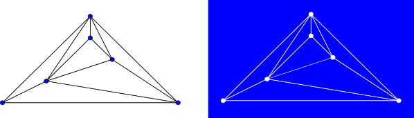
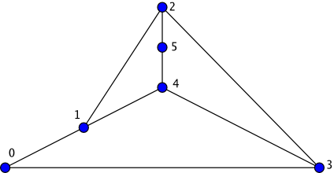

Planar Face Traversal
Traverses all faces of a planar graph defined by a planar embedding, invoking visitor event points along the way.
Complexity: O(n + m)
Defined in: <boost/graph/planar_face_traversal.hpp>
Example
#include <boost/graph/adjacency_list.hpp>
#include <boost/graph/boyer_myrvold_planar_test.hpp>
#include <boost/graph/planar_face_traversal.hpp>
#include <iostream>
#include <vector>
using namespace boost;
struct Edge { int idx; };
using Graph = adjacency_list<vecS, vecS, undirectedS, no_property, Edge>;
struct face_counter : public planar_face_traversal_visitor {
int count = 0;
void begin_face() { ++count; }
};
int main() {
Graph g(4);
add_edge(0, 1, g); add_edge(1, 2, g);
add_edge(2, 3, g); add_edge(3, 0, g);
add_edge(0, 2, g);
int i = 0;
for (auto e : make_iterator_range(edges(g))) { g[e].idx = i++; }
using embedding_t = std::vector<std::vector<graph_traits<Graph>::edge_descriptor>>;
embedding_t embedding(num_vertices(g));
boyer_myrvold_planarity_test(boyer_myrvold_params::graph = g,
boyer_myrvold_params::embedding = &embedding[0]);
face_counter visitor;
planar_face_traversal(g, &embedding[0], visitor, get(&Edge::idx, g));
std::cout << "Number of faces: " << visitor.count << "\n";
}Expected output:
Number of faces: 3
Synopsis
template <typename Graph, typename PlanarEmbedding,
typename PlanarFaceVisitor, typename EdgeIndexMap>
void planar_face_traversal(
const Graph& g,
PlanarEmbedding embedding,
PlanarFaceVisitor& visitor,
EdgeIndexMap em);| Direction | Parameter | Description |
|---|---|---|
IN |
|
An undirected graph. The type |
IN |
|
A model of PlanarEmbedding. |
IN |
|
A model of PlanarFaceVisitor. |
IN |
|
A Readable Property Map that maps edges from |
Description
A graph is planar if it can be drawn in two-dimensional space with no two of its edges crossing. Any embedding of a planar graph separates the plane into distinct regions that are bounded by sequences of edges in the graph. These regions are called faces.

A traversal of the faces of a planar graph involves iterating through all faces of the graph, and on each face, iterating through all vertices and edges of the face. The iteration through all vertices and edges of each face follows a path around the border of the face.
In a biconnected graph, each face is bounded by a cycle and each edge belongs to exactly two faces.
For this reason, when planar_face_traversal is called on a biconnected graph, each edge will be visited exactly twice: once on each of two distinct faces, and no vertex will be visited more than once on a particular face.
The output of planar_face_traversal on non-biconnected graphs is less intuitive — for example, if the graph consists solely of a path of vertices (and therefore a single face), planar_face_traversal will iterate around the path, visiting each edge twice and visiting some vertices more than once.
planar_face_traversal does not visit isolated vertices.
Like other graph traversal algorithms in the Boost Graph Library, the planar face traversal is a generic traversal that can be customized by the redefinition of certain visitor event points. By defining an appropriate visitor, this traversal can be used to enumerate the faces of a planar graph, triangulate a planar graph, or even construct a dual of a planar graph.

For example, on the above graph, an instance my_visitor of the following visitor:
struct output_visitor: public planar_face_traversal_visitor
{
void begin_face() { std::cout << "New face: "; }
template <typename Vertex> void next_vertex(Vertex v) { std::cout << v << " "; }
void finish_face() { std::cout << std::endl; }
};can be passed to the planar_face_traversal function:
output_visitor my_visitor;
planar_face_traversal(g, embed, my_visitor); //embed is a planar embedding of gand might produce the output:
New face: 1 2 5 4
New face: 2 3 4 5
New face: 3 0 1 4
New face: 1 0 3 2Visitor Event Points
-
visitor.begin_traversal(): called once before any faces are visited. -
visitor.begin_face(): called once, for each face, before any vertex or edge on that face has been visited. -
visitor.end_face(): called once, for each face, after all vertices and all edges on that face have been visited. -
visitor.next_vertex(Vertex v): called once on each vertex in the current face in order according to the planar embedding. -
visitor.next_edge(Edge e): called once on each edge in the current face in order according to the planar embedding. -
visitor.end_traversal(): called once after all faces have been visited.
Although next_vertex is guaranteed to be called in sequence for each vertex as the traversal moves around a face and next_edge is guaranteed to be called in sequence for each edge as the traversal moves around a face, there’s no guarantee about the order in which next_vertex and next_edge are called with respect to each other in between calls to begin_face and end_face.
These calls may be interleaved, all vertex visits may precede all edge visits, or vice-versa.
planar_face_traversal iterates over a copy of the edges of the input graph, so it is safe to add edges to the graph during visitor event points.